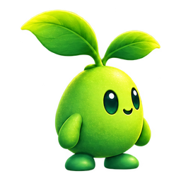
sprout-idle
주인공 idle · 256 × 256
개별 파일 ↓
주인공 idle · 256 × 256
개별 파일 ↓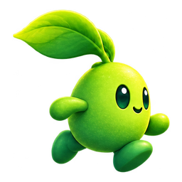
주인공 run-a · 256 × 256
개별 파일 ↓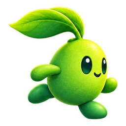
주인공 run-b · 256 × 256
개별 파일 ↓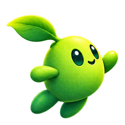
주인공 jump · 256 × 256
개별 파일 ↓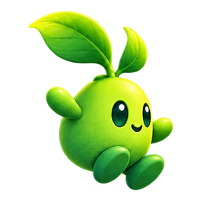
주인공 fall · 256 × 256
개별 파일 ↓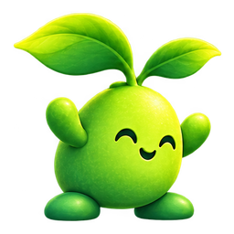
주인공 land · 256 × 256
개별 파일 ↓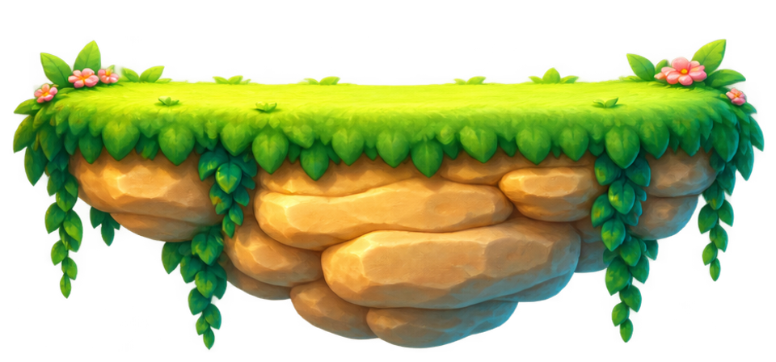
풀섬 고정 발판 · 960 × 448
개별 파일 ↓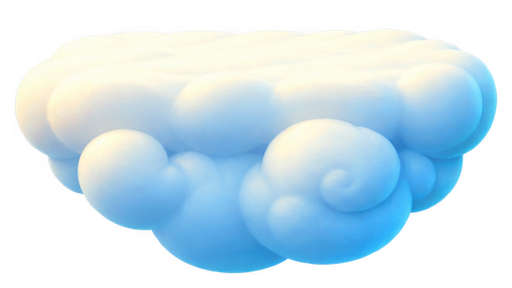
구름 이동 발판 · 512 × 288
개별 파일 ↓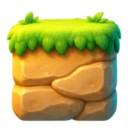
독립 반복 블록 · 256 × 256
개별 파일 ↓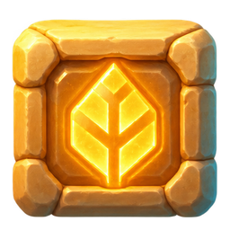
씨앗 룬 블록 · 256 × 256
개별 파일 ↓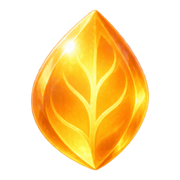
수집물 · 256 × 256
개별 파일 ↓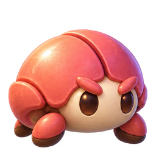
적 · 256 × 256
개별 파일 ↓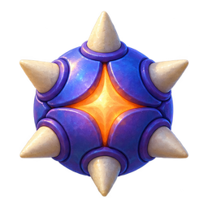
장애물 · 256 × 256
개별 파일 ↓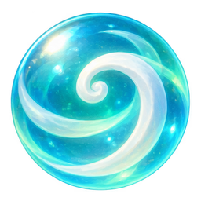
바람 능력 · 256 × 256
개별 파일 ↓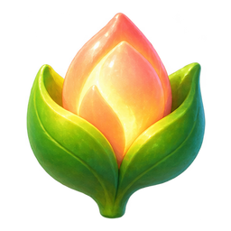
성장 아이템 · 256 × 256
개별 파일 ↓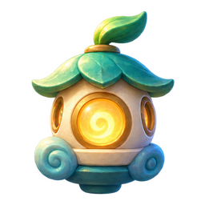
체크포인트 · 256 × 256
개별 파일 ↓먼 하늘 · 1536 × 1024
개별 파일 ↓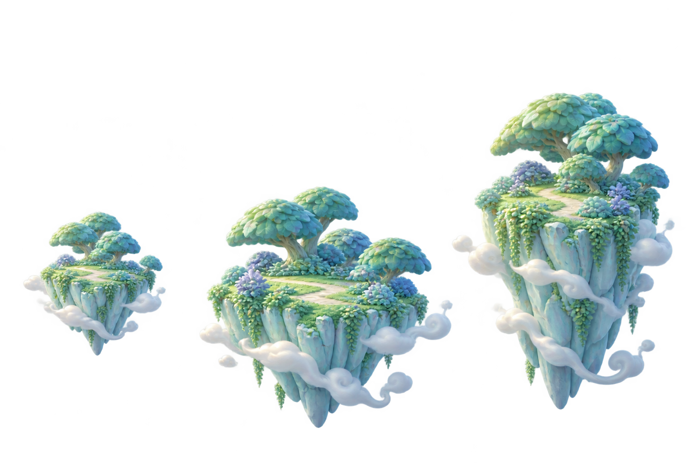
중경 패럴랙스 · 1536 × 1024
개별 파일 ↓체력 · 48 × 48
개별 파일 ↓HUD 씨앗 · 48 × 48
개별 파일 ↓일시정지 · 48 × 48
개별 파일 ↓이동 · 48 × 48
개별 파일 ↓점프 · 48 × 48
개별 파일 ↓달리기 · 48 × 48
개별 파일 ↓재시도 · 48 × 48
개별 파일 ↓오디오 · 48 × 48
개별 파일 ↓완료 · 48 × 48
개별 파일 ↓텍스트 없는 기본 버튼 9-slice · 320 × 88
개별 파일 ↓텍스트 없는 보조 버튼 · 320 × 88
개별 파일 ↓HUD 9-slice 배경 · 320 × 88
개별 파일 ↓
수집 순간 방사형 이펙트 · 192 × 192
개별 파일 ↓
착지 먼지 · 240 × 96
개별 파일 ↓
바람 궤적 · 256 × 96
개별 파일 ↓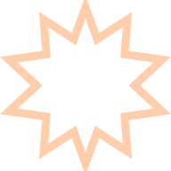
피격 플래시 · 192 × 192
개별 파일 ↓